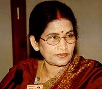
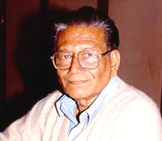
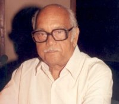
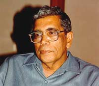
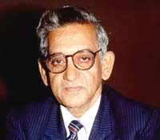

Local database reading edition
Saved Odia writer panel
Reconstructed from database records, not a captured original forum layout. Dates and display names are retained as recorded; timezone and real-world identity are not inferred. Historical advice, contact details and offers are not current. Original markup is shown as inert text.
The six stored image choices from the former rotating panel are shown together. Labels are copied from the database, not inferred from faces. The old interview/audio service has not been recovered.






Source notes
MyCommunity/DDAug2005/odia_personalities/personalities.mdb
Table: Banner · record IDs: 7, 2, 3, 4, 5, 6